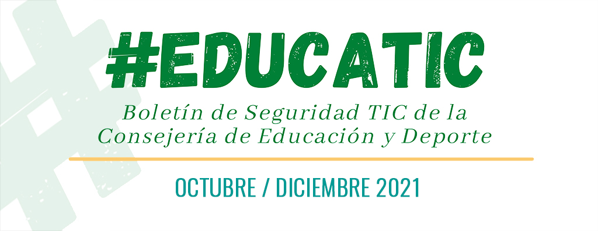
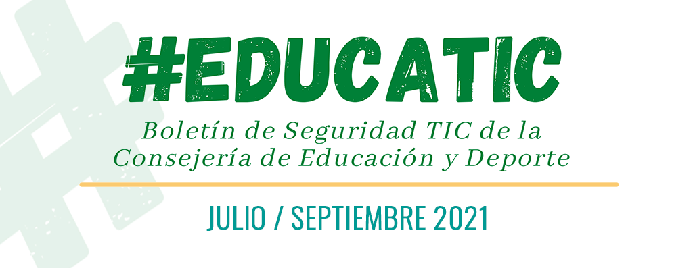
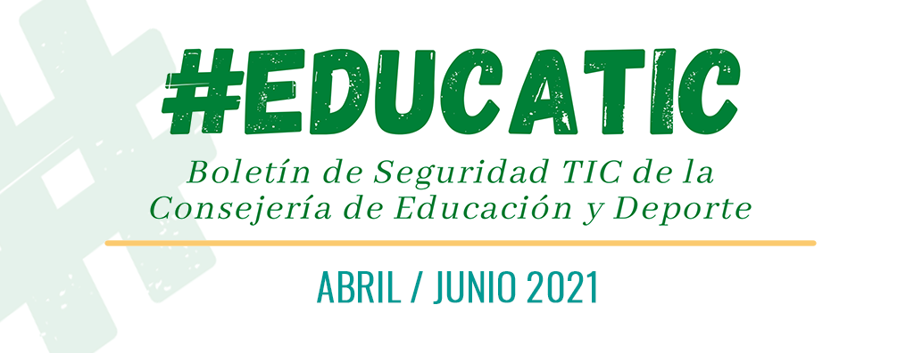

- Actualidad
10
Nov/21
Boletín de Seguridad TIC del cuarto trimestre de la Consejería de Educación y Deporte.
La Consejería de Educación y Deporte publica el boletín de noticias y consejos de seguridad del cuarto trimestre orientado a la comunidad educativa.
Enlaces asociados a la noticia:
- Boletín de seguridad para docentes Octubre - Diciembre 2021
22
Jul/21
Boletín de Seguridad TIC del tercer trimestre de la Consejería de Educación y Deporte.
La Consejería de Educación y Deporte publica el boletín de noticias y consejos de seguridad del cuarto trimestre orientado a la comunidad educativa.
Enlaces asociados a la noticia:
- Boletín de seguridad para docentes Julio - Septiembre 2021
13
Abr/21
Boletín de Seguridad TIC del segundo trimestre de la Consejería de Educación y Deporte.
La Consejería de Educación y Deporte publica el boletín de noticias y consejos de seguridad del cuarto trimestre orientado a la comunidad educativa.
Enlaces asociados a la noticia:
- Boletín de seguridad para docentes Abril - Junio 2021
31
Mar/21
Disponible Certificado de Retenciones del IRPF 2020.

El personal docente de la Consejería de Educación ya tiene disponible en la sección de Datos Retributivos del Portal del
Docente la descarga del certificado de retenciones de IRPF correspondiente al ejercicio 2020.
El personal de Administración y Servicios podrá descargar dicho documento desde la Web del Emplead@ Público de la Consejería de Hacienda y Administración Pública.
11
Feb/21
Campaña Correos Maliciosos
Recientemente se han recibido varios avisos en los que se alertaba de la recepción de correos electrónicos fraudulentos por parte de usuarios que se hacían pasar por empleados o proveedores de la Consejería.
Esos correos electrónicos contenían archivos adjuntos maliciosos que, al descargarlo en el equipo, ejecutaban un malware que daba acceso libre a los recursos internos al atacante. Por este motivo, os hacemos llegar algunas recomendaciones para identificar este tipo de mensajes.
- Consejos sobre Correos Electrónicos Malicioso o 'Phising'
04
Feb/21
Boletín de Seguridad TIC de la Consejería de Educación y Deporte
La Consejería de Educación y Deporte publica su primer boletín de noticias y consejos de seguridad orientado a la comunidad educativa.
#EDUCATIC - Boletín de Seguridad TIC de la Consejería de Educación y Deporte
08
Ene/21
Política de seguridad de las Tecnologías de la Información y Comunicaciones de la Consejería de Educación y Deporte.
La política de seguridad publicada por Orden de 3 de diciembre de 2020 renueva el compromiso de la Consejería de Educación y Deporte con la seguridad de los sistemas de información, establecido anteriormente por la Orden de 11 de febrero de 2008, definiendo los objetivos y criterios básicos para el tratamiento de la información y sentando los pilares del marco normativo de seguridad en la Consejería y la estructura organizativa y de gestión que velará por su cumplimiento.
- Orden de 3 de diciembre de 2020, por la que se establece la política de seguridad de las tecnologías de la información y comunicaciones de la Consejería de Educación y Deporte